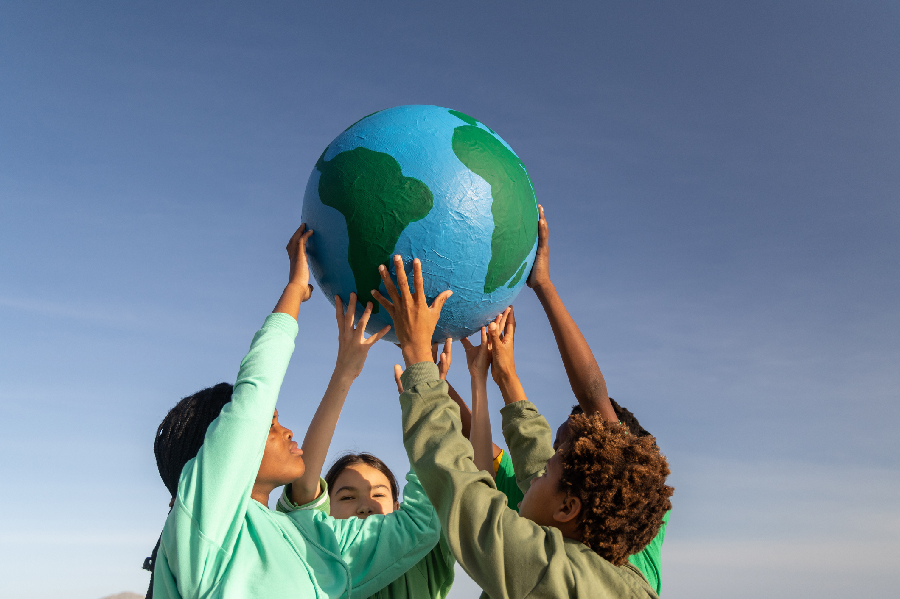

Lifelong Learning for Sustainable Future
1. What is Lifelong Learning?
Lifelong learning is the ongoing process of acquiring knowledge, skills, values, and competencies throughout a person's life. Unlike, traditional education, which is often limited to schools or universities, lifelong learning extends beyond formal setting to everyday experiences, workplaces, communities, and digital environments.
In today's rapidly changing world, lifelong learning is essential as knowledge quickly becomes outdated. New technologies, industries, and global challenges require individuals to constantly update their understanding and skills.
Learning Types:
-
Formal learning
- schools
- universities
- certifications
-
Informal learning
- self study
- life experience
- training programs
Empowers to:
- Adopt to change
- stay competitive in the job market
- Develop personal interests and passion
- contribute meaningfully to society
2. Importance of Skills Development
Skill development is an important part of lifelong learning. It helps people grow in their personal lives and in their jobs. Today, the world is changing very rapidly due to new technologies, global connections, and changes in the economy. Because of this, the skills people need are also changing. Therefore, it is important for everyone to continue learning and improving their skills to stay up-to-date and competitive.
It ensures individuals remain relevant, employable, and capable of handling modern challenges. It also increases confidence and independence.
Soft Skills
- Communication
- Teamwork and Collaboration
- Problem solving and Critical thinking
- Leadership and Management
Technical Skills(depends on jobs)
- Coding and programming
- Data analysis and interpretation
- Engineering
- medical and healthcare
- Financial and accounting
Digital Skills
- Using software tools
- Navigating online platform
- Understanding cybersecurity
- Using AI platforms
3. Community Education Programs
Community education programs play an important role in promoting lifelong learning, especially for people who do not have access to formal education. These programs are usually affordable or free, easily accessible to local communities, and designed to serve people of all ages. Common examples include adult literacy classes, vocational training workshops, language learning programs, and environmental awareness campaigns.
This programs help include everyone, give people equal chances, and support the development of the local area.
They also make communities stronger by bringing people together to learn and grow.
For example, a local workshop that teaches sustainable farming can help people grow more food while also
protecting the environment.
4. Education for Sustainable Development (ESD)

Education for Sustainable Development(ESD) is an important part of learning throughout life. It helps people gain the knowledge and skills needed to create a better and more responsible world. It is linked to global problems like climate change, poverty, inequality, and how we use resources. Through ESD, people learn to make good choices for the environment, live in a sustainable way, and support fairness and equality in society.
Sustainable development is about three main ideas:
Caring for the environment, Supporting the economy, and Being responsible to society
Students and communities can help by doing simple things in their daily lives. This includes reducing waste, saving energy, and supporting businesses that do the right thing. When people make careful and responsible choices, they help protect the environment, improve the economy, and make society fair for everyone.
5. How Lifelong Learning Benefits Society
Lifelong learning does not only benefit individuals. It has a powerful impact on society as a whole.
Social Benefits
- Promotes equality and inclusion
- Reduces poverty through education
- Encourages active citizenship
Economic Benefits
- Creates a skilled workforce
- Boosts innovation and productivity
- Support economic growth
Environment Benefits
- Encourages sustainable behaviours
- Increases awareness of global issues
- Promotes responsible resource